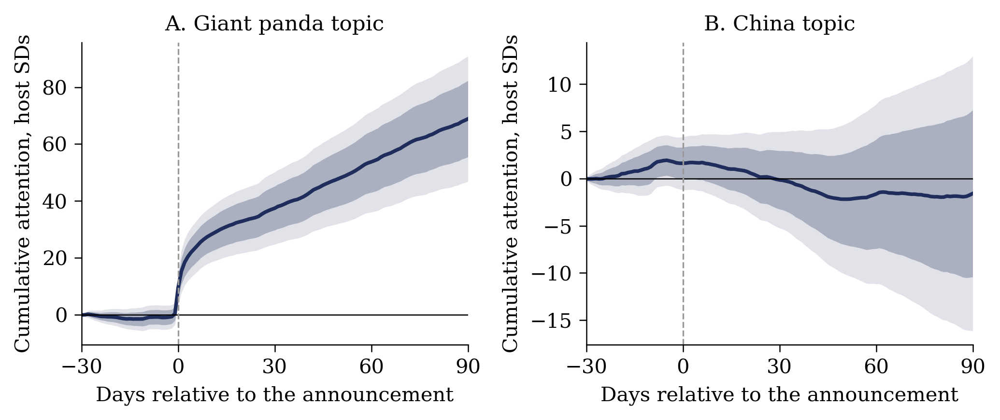
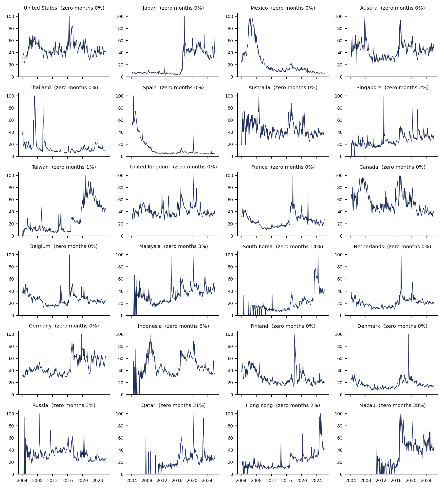

Panda Shocks
Panda ShocksFigures
Figures from Yeh (2026), Soft Power Shocks: Does Attention to a Symbol Translate into Bilateral Exchange? Click a figure to open the full-resolution PNG.

z_birth_nat, summed across hosts by month, 2011–2025: 33 births in 14 hosts, median dose 3.08 host SDs.



A_panda, for each of the 24 hosts, 2004–2025. Each series is scaled to 100 at its own maximum. Note Japan's level shift in 2017 and the early-years contamination in Spain and Mexico.